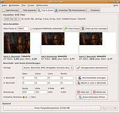
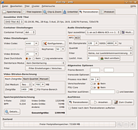

dvd::rip
Dieser Artikel wurde für die folgenden Ubuntu-Versionen getestet:
Ubuntu 16.04 Xenial Xerus
Ubuntu 14.04 Trusty Tahr
Zum Verständnis dieses Artikels sind folgende Seiten hilfreich:
dvd::rip  ist ein auf Perl/Gtk+ basierendes Frontend für transcode, mit dessen Hilfe man DVDs in z.B. XviD, VCD oder SVCD umwandeln kann. Eine besondere Funktion ist der Cluster-Modus, mit dem es möglich ist, die Berechnung auf mehrere Rechner zu verteilen. Zur Vorschau werden xine und MPlayer unterstützt (siehe VideoPlayer).
ist ein auf Perl/Gtk+ basierendes Frontend für transcode, mit dessen Hilfe man DVDs in z.B. XviD, VCD oder SVCD umwandeln kann. Eine besondere Funktion ist der Cluster-Modus, mit dem es möglich ist, die Berechnung auf mehrere Rechner zu verteilen. Zur Vorschau werden xine und MPlayer unterstützt (siehe VideoPlayer).
Installation¶
dvd::rip ist in den Ubuntu-Paketquellen enthalten. Man benötigt aus der Liste das erste Paket [1], der Rest ist optional, aber empfehlenswert, um alle Funktionen des Programms nutzen zu können.
dvdrip (multiverse)
 mit apturl
mit apturl
Paketliste zum Kopieren:
sudo apt-get install dvdrip
sudo aptitude install dvdrip
Des Weiteren gibt es noch eine Reihe von optionalen Pakete, welche man benötigt, wenn man alle Funktionen von dvd::rip nutzen möchte:
cdrdao (optional)
mjpegtools (multiverse, optional)
mplayer (multiverse, optional)
ogmtools (universe, optional)
unrar (multiverse, optional)
subtitleripper (multiverse, optional)
vcdimager (universe, optional)
xine-ui (universe, optional)
xvid4conf (multiverse, optional)
xvidenc (multiverse, optional)
mit apturl
Paketliste zum Kopieren:
sudo apt-get install cdrdao mjpegtools mplayer ogmtools unrar subtitleripper vcdimager xine-ui xvid4conf xvidenc
sudo aptitude install cdrdao mjpegtools mplayer ogmtools unrar subtitleripper vcdimager xine-ui xvid4conf xvidenc
Hinweis:
Das Paket xvidenc ist nicht in den Xenial-Quellen enthalten, sondern nur für Trusty und wieder ab Zesty.
Außerdem müssen entsprechende Codecs zur Wiedergabe von DVDs installiert sein.
Konfiguration¶
Beim ersten Start von dvd::rip erscheint ein Assistent, der bei der Einrichtungen des Programms hilft. In der Standardkonfiguration erwartet dvd::rip das Packprogramm rar unter dem Namen rar. Die Datei heißt jedoch unter aktuellen Ubuntu-Versionen unrar. Dies ist also hier zu korrigieren.
In Kubuntu ist seit Intrepid 8.10 der Dragon Player als Standard installiert. Wer sich den mplayer nicht zusätzlich installieren möchte, kann die Abspielbefehle für DVDs und Dateien auch dahingehend anpassen und mplayer jeweils durch dragon player ersetzen.
Die Argumente für xine und mplayer sind bereits vorgegeben. Möchte man aber vlc für die Vorschau wählen trägt man für den "DVD Abspielbefehl" Folgendes ein:
vlc dvdsimple://%d#%t
Wenn alle oben aufgelisteten Pakete installiert sind, sollte überall ein grünes "OK" erscheinen.
Sollte eine Funktion in dvd::rip nicht funktionieren, kann auch später geprüft werden, ob alle benötigten Abhängigkeiten installiert sind. Dazu ruft man
* "Fehlersuche -> Prüfe installierte Pakete"
auf oder benutzt die Tastenkombination Strg + D . Rot markierte Programme sollten dann nachinstalliert werden.
Bedienung¶
Nach dem Beenden des Assistenten wird man zunächst von einem leeren Fenster empfangen. Über
"Datei -> Neues Projekt"
kann man ein neues Projekt anlegen. Daraufhin erscheinen verschiedene Laschen im Fenster von dvd::rip.
Speicherung¶
Hier trägt man unter "Projektname" einen Arbeitstitel ein. Unter diesem werden die Daten abgelegt. Über "Erzeuge Projekt" wird das Projekt auf der Festplatte angelegt. Des weiteren sollte man kontrollieren, dass die Datenquelle korrekt angegeben ist und dass auf der Partition, auf der die temporären Daten liegen, ausreichend Platz vorhanden ist.
Titel kopieren¶
Über "DVD Inhaltsverzeichnis einlesen" liest man die aktuelle DVD ein. Daraufhin erscheinen sämtliche auf der DVD enthaltenen Kapitel. Hier sollte man nun die gewünschten Kapitel und die passenden Tonspuren auswählen.
Ist man sich nicht sicher, welches Kapitel man kopieren möchte, so kann man über "Ausgewählte Titel/Kapitel ansehen" am unteren Rand des Fensters das selektierte Kapitel einsehen. Zum Konvertieren bzw. Bearbeiten der DVD-Daten muss man zuerst den Inhalt dieser Kapitel auf die Festplatte kopieren. Über "Ausgewählte Titel/Kapitel auf die Festplatte kopieren" geschieht dies nun. Dies dauert eine Weile.
Will man unterschiedliche Ergebnisse in der Ausgabe der einzelnen Kapitel erzielen, kann für jeden Titel eine individuelle Konfiguration erzeugt werden. Dies erzielt man, indem man unter dem Menüpunkt "Transkodieren" den jeweiligen Titel auswählt und die Übernahme-Einstellungen angibt. Anschließend müssen allerdings alle derart vorkonfigurierten Titel erneut unter "Titel kopieren" angewählt werden, bevor man den Button "Transkodieren" drücken kann. Diese Verfahren ist etwa dann interessant, wenn man Ausgangsmaterial mit sehr unterschiedlichen Inhalten vorliegen hat.

Clip & Zoom¶
Hier kann man einstellen, wie das Bild zurecht geschnitten werden soll. Üblicherweise transformiert man das Video in das richtige Format und schneidet die schwarzen Ränder oben und unten ab. Als Standard ist
"Automatischer Beschnitt, Mittlere Bildgröße, Schnelle Skalierung"
eingetragen. Üblicherweise ist diese Option ausreichend und erzeugt eine gute Qualität. Über den Button "Hole Frame" kann man eine Vorschau betrachten und sehen, ob die eingestellten Werte gut sind.
Untertitel¶
Existiert ein Untertitel auf der DVD, so kann man diesen über diese Lasche gleich in das Bild einbauen lassen. Üblicherweise fügt man einen Untertitel jedoch nicht direkt in das Bild ein, sondern erzeugt eine vobsub-Datei. Diese Option ist im unteren Teil dieses Dialoges verfügbar.

Transkodieren¶
Dieser Teil wird nun komplizierter, da er einiges Wissen im Umgang mit Codecs und Videodaten voraussetzt. Zusätzliche Informationen zu jeder einzelnen Option kann man durch "Tooltips" bekommen, wenn man mit dem Mauszeiger über einer Option stehen bleibt. Diese Informationen helfen, ein Video mit bestmöglicher Qualität zu erzeugen.
Container Format¶
"AVI:" Der übliche Video-Container
"OGG:" Ergibt die Möglichkeit den Ton mit OGG Vorbis zu Kodieren
Video Einstellungen¶
"Video Codec:" Je nach ausgewähltem Container Format stehen hier unterschiedliche Codecs zur Verfügung. Beliebt und leistungsfähig sind Codecs wie XviD und Divx.
"Video Bildrate:" Die Bildwiederholrate des Filmes. Diesen Wert sollte man üblicherweise nicht ändern.
"Zwei Durchläufe:" Eine 2-Pass-Kodierung erhöht die Bildqualität und die Bestimmung der optimalen Bitrate deutlich. Allerdings dauert diese Art der Kodierung praktisch doppelt so lange, da das Video zwei mal kodiert wird.
"Deinterlace Modus:" Falls die Quelle von einem Fernsehbild stammt, so ist es sinnvoll, das Bild über einen Deinterlacer aufzubereiten. Allerdings können hierbei auch Bildstörungen erzeugt werden.
"Filter:" Über diese Option kann man sämtliche Filter von transcode per Hand hinzufügen. Diese Option erfordert sicherlich viel Wissen über solche Filter.
Audio Einstellungen¶
"Spur auswählen:" Hier kann man nochmals die Audiospur auswählen, die in das Video integriert werden soll. Über den Button "Multi" lässt sich auch ein Video mit mehreren Tonspuren erzeugen.
"Format:" Je nach ausgewähltem Container-Format stehen hier unterschiedliche Laschen zur Verfügung: MP2, MP3, AC3, OGG usw. Die aktive Lasche wird als Audioformat für das Video genutzt.
Video-Bitraten-Berechnung¶
"Nach Zielgröße:" Die Videoqualität kann automatisch so eingestellt werden, dass man eine optimale Videoqualität auf eine gegebene Anzahl an Datenträgern kopieren kann.
"Nach Qualität:" Ist die Ausgabegröße nicht relevant, dann kann man den Wert "BPP" oder "Bits pro Pixel" auch von Hand eingeben. Ein Wert von "0,25" entspricht guter VHS Qualität, ein Wert von "0,4" bis "0,5" kommt an eine DVD heran.
"Manuell:" Hier kann man die Bitrate des Videos direkt einstellen. Dies ist nur sinnvoll, wenn man ein Video mit einer bestimmten Bitrate braucht.
Allgemeine Optionen¶
Hier können noch weitere Optionen angegeben werden. Interessant ist der "nice" Wert. Dieser bestimmt, wie aggressiv sich dvd::rip Systemressourcen holen darf. Je höher dieser Wert ist, desto "netter" benimmt sich das Programm. Der Maximalwert ist 20.
Ausführen¶
Über "Transkodieren" wird nun die Kodierung des Videos ausgeführt. Je nach Rechenleistung und eingestellten Optionen kann dieser Vorgang mehrere Stunden dauern.
Beispiel¶
Nur Audio-Spuren auslesen¶
Zum Einsatz kommen die Programme dvd::rip und avconv.
In dvd::rip ein neues Projekt anlegen
Die Speicherpfade und das DVD-Gerät auf dem "Storage"-Reiter konfigurieren. "Copy data from DVD to harddisc before encoding" auswählen, damit auf dem nächsten Reiter die Schaltfläche "Rip selected titles/chapters" aktiviert ist.
Auf dem "Rip Title"-Reiter den Titel und die Audio-Spur auswählen, die gerippt werden soll. Bei "Specify chapter mode" als "Selection" die Option "All" für alle Kapitel auswählen.
Die Schaltfläche "Rip selected titles/chapters" anklicken. Damit werden die *.vob-Dateien in das oben konfigurierte Datenverzeichnis geschrieben. Wenn dabei eine Fehlermeldung
"Chapter x is too small and useless. You should deselect it."erscheint, kann diese einfach ignoriert werden. Sie erscheint, wenn scheinbar zu wenige Videodaten in einem Kapitel vorhanden sind, was gerade bei reinen Audiotracks schnell der Fall ist.Nun können über das Menü "Title" über den Punkt "Create WAV from selected audio track" WAV-Dateien aus den .vob-Dateien extrahiert werden.
Alternativ können die Audio-Spuren auch manuell aus den .vob-Dateien extrahiert werden, wie die folgenden Beispiele zeigen.
Eine 5.1-ac3-Spur herauskopieren, ohne sie zu rekodieren:
avconv -i EINGABEDATEI.vob -vcodec none -acodec copy AUSGABEDATEI.ac3
Wenn die DVD Audio-Spuren mit dem Codec LPCM beinhaltet, kodiert man diese am besten nach FLAC. Achtung: Auf diese Weise werden 24-bit- und 32-bit-Formate automatisch nach 16-bit kodiert, was meist nicht gewünscht sein wird, aber bspw. die 48kHz bleiben erhalten:
avconv -i EINGABEDATEI.vob -vcodec none -acodec flac AUSGABEDATEI.flac
Einen Surround-Stream zu Stereo (downmix) konvertieren mittels des "audio-channel"-Parameters -ac:
avconv -i EINAGBEDATEI.vob -vcodec none -acodec flac -ac 2 AUSGABEDATEI.flac
Wenn mehrere Audio-Streams in einer .vob-Datei enthalten sind, kann der -map-Parameter benutzt werden, um die Spur zu wählen. Diese wird dann zum einzigen Stream in der Ausgabedatei. Damit kann bspw. eine HD-Stereo-Spur statt der normalerweise bevorzugten 5.1-Spur gewählt werden:
avconv -i EINGABEDATEI.vob -vcodec none -acodec flac -map 0:2 AUSGABEDATEI.flac
Um 24-bit-LPCM (und vermutlich auch 32-bit-LPCM) verlustfrei zu kopieren, muss zunächst eine WAV-Datei angelegt werden:
avconv -i track_001-C001.vob -vcodec none -acodec pcm_s24le -map 0:2 01_track.wav
Alle Audio-Streams, die in einer .vob-Datei enthalten sind, können über das folgende Kommando aufgelistet werden:
avconv -i EINGABEDATEI.vob
Um sich alle Audio-Codecs aufzulisten, die von avconv unterstützt werden, um Dateien zu kodieren (Encoden):
avconv -codecs | grep "^..EA"
 Programmübersicht
Programmübersicht- Erstellt mit Inyoka
-
 2004 – 2017 ubuntuusers.de • Einige Rechte vorbehalten
2004 – 2017 ubuntuusers.de • Einige Rechte vorbehalten
Lizenz • Kontakt • Datenschutz • Impressum • Serverstatus -
Serverhousing gespendet von